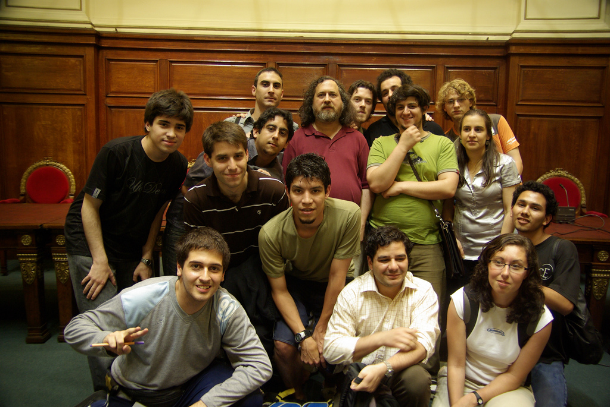

Press to reset and detect faces automatically.
WARNING:
This might take some time.
Click to add a new point or Ctrl+Click (Cmd+Click) to remove the closest point.
Press to switch to a printable mask mode.
Right click > Save Image
